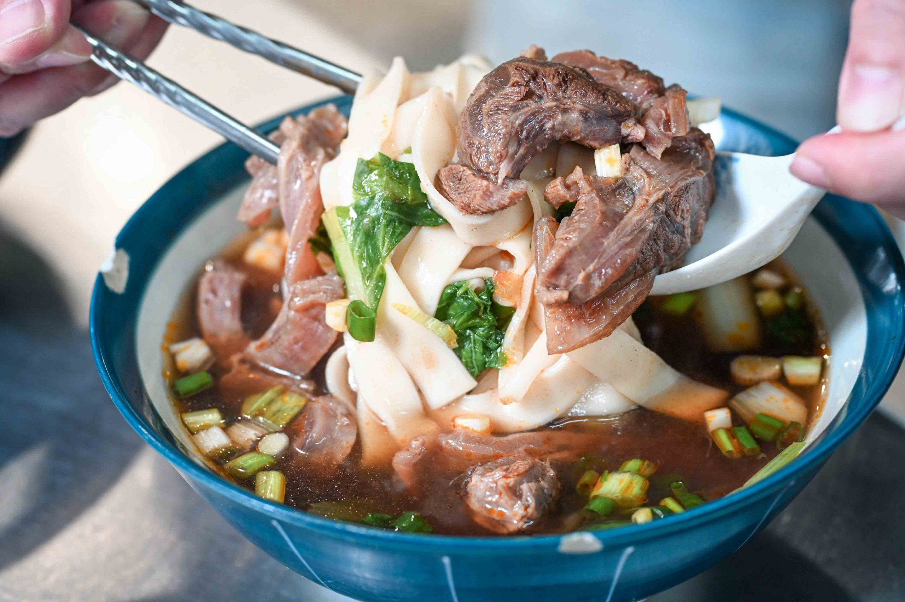

Nash｜大佳牛雜湯：內湖站 500 碗推薦，清燉牛雜與紅燒牛肉麵口袋名單
來源是 Nash，神之領域 2026-07-30 食記〈【內湖美食】大佳牛雜湯｜500碗推薦隱藏版牛肉麵，在地人大推清甜牛骨湯頭！捷運內湖站美食、菜單〉。這篇適合收進「生活雷達／台北美食／內湖站」：重點是捷運內湖站附近一間以清燉牛雜與紅燒牛肉麵為主的在地型牛肉麵店。

一句話摘要
大佳牛雜湯位在台北市內湖區康寧路一段 108 號，靠近捷運內湖站；主打清燉牛雜、牛雜麵、紅燒牛肉麵與牛腩飯。Nash 的評價重點是清燉湯頭溫潤甘甜、牛雜帶筋帶肉、份量有飽足感，且內用可免費加湯；如果欒帥在內湖站附近想吃清爽系牛肉麵或牛雜湯，這家可列入口袋名單。
店家資訊
- 店名：大佳牛雜湯
- 地址：台北市內湖區康寧路一段 108 號
- 交通：捷運內湖站步行約 3–5 分鐘
- 電話：02-2792-3193
- Nash 文中營業時間：10:00–20:30，週二公休
- 類型：清燉牛雜湯、紅燒牛肉麵、牛腩飯、乾麵
文章重點整理
Nash 指出，大佳牛雜湯是內湖在地人收藏多年的口袋名單，店面不大、空間簡單樸實，但中午與晚餐尖峰常見客滿或排隊。菜單不算複雜，重點集中在清燉牛雜、紅燒牛肉、牛腩飯與乾麵；內用可免費加湯。
最代表性的品項是清燉牛雜與牛雜麵。Nash 描述牛雜不是單純內臟，而是帶筋帶肉、口感 Q 彈且肉感明顯；清燉湯頭以牛骨慢熬，搭配店家草本配方，喝起來甘甜、清爽、不油膩。若偏好濃郁口味，則可點紅燒牛肉麵，湯色較深但文中形容仍偏溫順耐喝。
必懂點法
- 初訪首選：清燉牛雜或牛雜麵，最能吃到店家招牌草本清燉湯頭。
- 想吃紅燒：點牛肉系列；Nash 文中說牛雜系列固定搭配清燉湯頭。
- 麵體：可依喜好選寬麵或細麵。
- 調味：桌上有酸菜、辣椒等，建議先喝原湯，再少量加入調味料。
- 食量策略：內用可免費加湯，適合喜歡喝湯的人。
圖片描述
主圖是一碗牛肉麵/牛雜麵特寫：白色寬麵被湯匙舀起，旁邊有厚實牛肉塊、帶筋部位、青菜與蔥花；湯頭顏色偏深，畫面看起來比「清湯」更接近紅燒或較濃的牛肉湯。圖片無明顯可讀文字。
補抓的另一張店內照片實際是煮麵工作區：可見員工在麵鍋前操作，旁邊有青菜籃、湯鍋與廚房器具；這張不是菜單照，所以本文不把它當菜單 OCR 來源。
來源與查核
Nash 原文列出地址、電話與營業時間。Brave Search 交叉比對到多篇食記也一致標示大佳牛雜湯位於台北市內湖區康寧路一段 108 號、電話 02-2792-3193、營業時間多為 10:00–20:30、週二公休；其中老K嘴一下、瑪姬幸福過日子、水晶安蹄等來源也都把它歸為捷運內湖站附近的牛雜湯/牛肉麵店。
出發前仍建議用 Google Maps 或店家社群再次確認當日公休、價格、排隊與是否售完。
收進生活雷達的理由
這篇補上「內湖站附近想吃清爽牛雜/牛肉麵」的口袋點。適合安排在內湖辦事、捷運文湖線沿線移動、或想找 500 碗推薦牛肉麵時快速查詢。